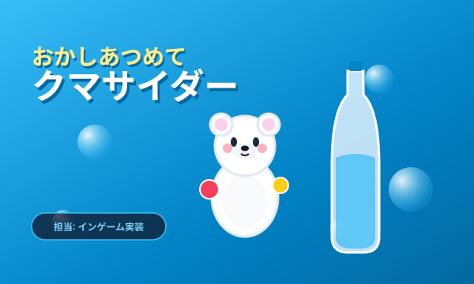
おかしあつめてクマサイダー
お菓子を集めてサイダーを満たすポップな3Dアクション。プレイヤーの移動、お菓子取得判定、制限時間・スコア計算、およびAランク判定等のリザルト同期を担当しました。
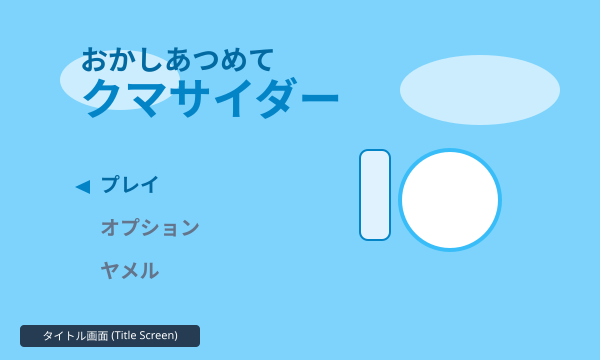
タイトル
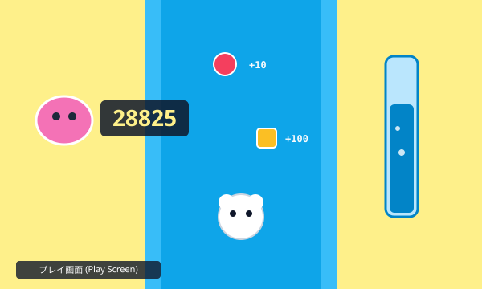
プレイ
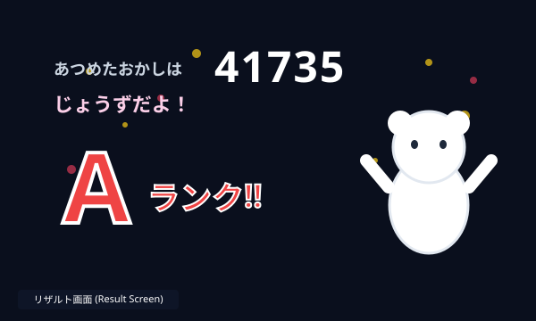
リザルト
「UIゲージに頼らずとも、パッと見で直感的に戦況を理解できる描画演出」を追究しています。DirectX 12によるデカールの動的バッチングや15種以上のポストエフェクト、レイキャストによる視野ジオメトリ生成など、ローレベルAPIとゲームロジックを融合させた開発に取り組んでいます。
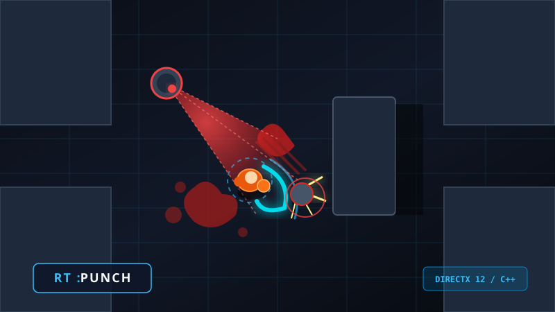
UIレスな視覚伝達を追求した3D見下ろしアクション。DirectX 12自作描画エンジン上で動作し、動的デカールバッチングとシェーダー連携を実装。
今までの学びの集大成として制作中の個人プロジェクトです。DirectX 12による自作レンダリング基盤と、直感的なアクション性を実現する技術検証を盛り込んでいます。
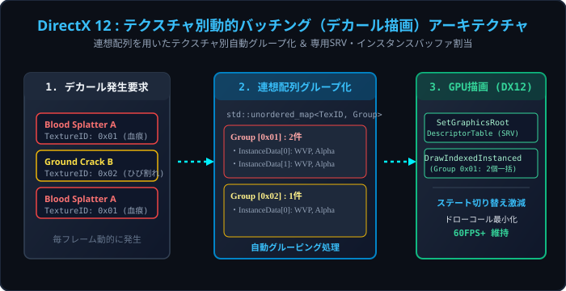
連想配列を使ってテクスチャ単位でデカールデータを動的に自動グループ化しています。グループ毎に専用のSRVとインスタンスバッファを割り当てることで、描画時のステート（テクスチャ）切り替えコストを最小化しました。
DrawIndexedInstanced によるドローコール集約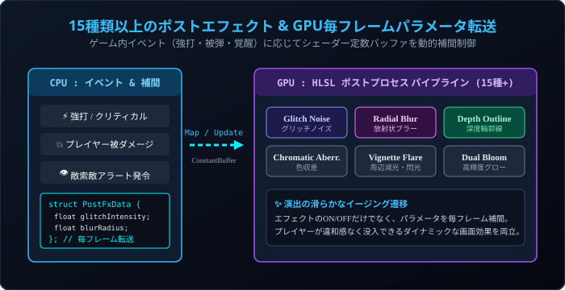
Glitch、Radial Blur、Depth Outlineなど15種類以上のエフェクトを自作HLSLで実装。ゲーム内イベントに合わせてシェーダーへのパラメータ（強度や範囲など）を毎フレームGPUへ転送し、滑らかな演出の遷移を実現しています。
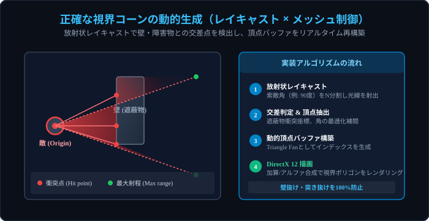
敵の索敵範囲が壁を貫通しないよう、放射状にレイキャストを行い当たり判定を取得。その衝突結果をメッシュの頂点座標に直接反映し、障害物で正確に遮られる視界コーンを毎フレーム描画しています。
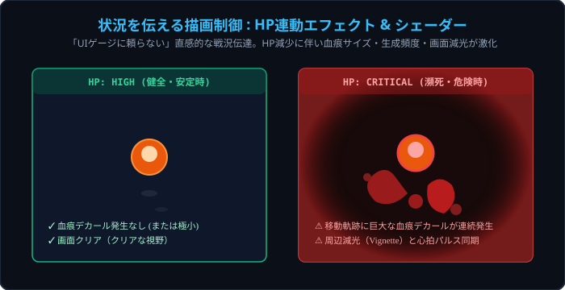
プレイヤーの残りHPに応じて血痕テクスチャのサイズや生成頻度を動的に変化させるなど、ゲームパラメータと描画を連動させています。UIゲージを見なくても自分の生存危機を直感できます。
Unity / C# を用いた3人チーム（各制作期間2ヶ月）での開発作品です。各作品において「インゲーム」「UI」「プレイヤー」の主担当として実装を牽引しました。

お菓子を集めてサイダーを満たすポップな3Dアクション。プレイヤーの移動、お菓子取得判定、制限時間・スコア計算、およびAランク判定等のリザルト同期を担当しました。



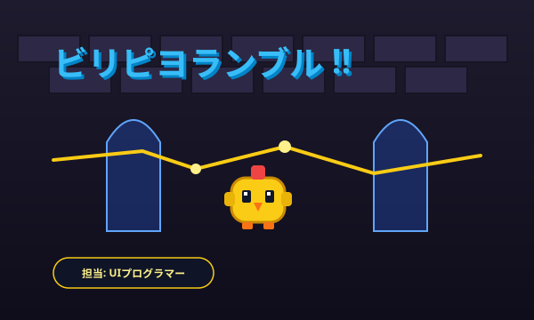
ドット絵の城内で電撃を避けながら競うタイムアタックアクション。メニュー階層遷移、ミリ秒単位のタイマーHUD描画、ランキング、リザルト演出ステートマシンを担当。
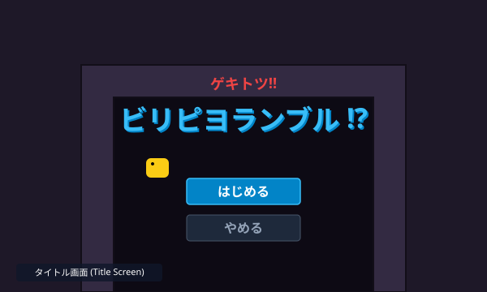
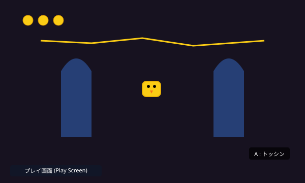
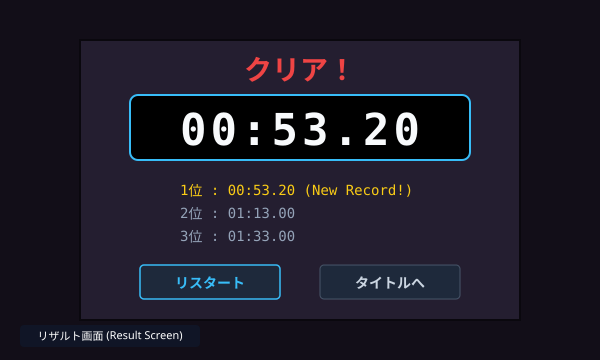
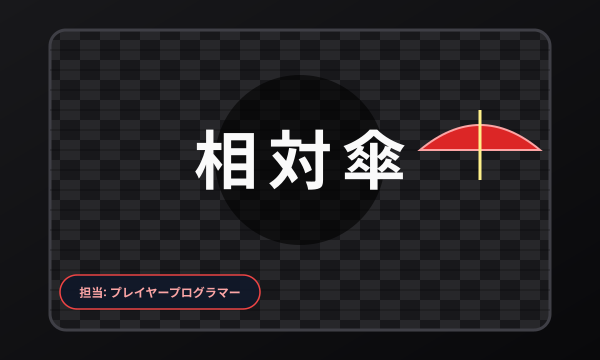
和風の世界観とレトロTV（CRT）走査線演出が融合した傘アクション。WASD移動＋マウスエイムによる傘の発射・近接攻撃判定、ボス演出ムービーへのカメラ連携を実装。
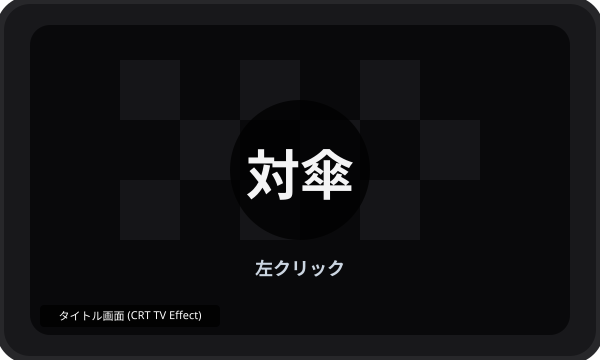
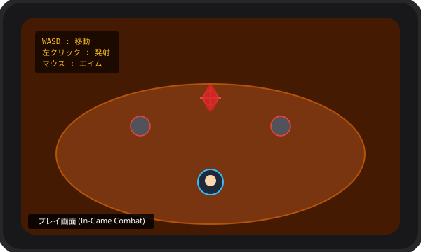
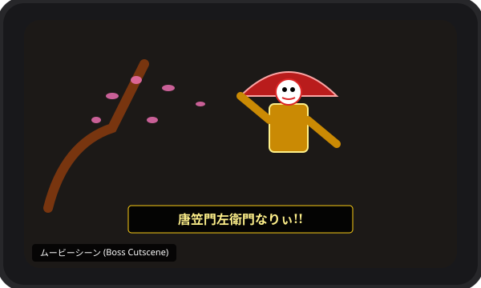
2024〜2026年の間に、個人開発・チーム開発・ゲームジャムを合わせて計14作品を制作しました。自作C++エンジンからUnity、UE5まで多彩な開発経験を蓄積しています。
3D見下ろしアクション。テクスチャ別バッチング、15種ポストエフェクト、レイキャスト視野生成。
3Dアクション。担当：インゲーム（プレイヤー制御・お菓子取得・スコア・リザルト演出）。
2Dピクセルアクション。担当：UI（ミリ秒タイマーHUD・ランキング・メニュー遷移制御）。
和風CRTアクション。担当：プレイヤー（傘エイム＆射撃・近接判定・カメラムービー演出）。
レトロアーケード風の高速シューティングゲーム。大量の弾幕生成と衝突判定の最適化。
自作2Dエンジンを用いたバルーン浮遊アクションゲーム。物理演算と浮力挙動シミュレーション。
上下移動を駆使してステージを攻略する2Dパズルプラットフォーマー。ギミックロジック担当。
床を塗って陣地を広げるパーティーアクション。シェーダーによるリアルタイム領域着色処理。
光と影を切り替えて進むステルスホラーアクション。動的ライティングと視野判定ギミック。
サイバー調のハイスピードラン＆ガンアクション。リズミカルなコンボシステムとヒットエフェクト。
極限の反射神経を試す弾幕回避ミニゲーム。毎フレーム高精度なOBB/円形当たり判定を実装。
リング内のオブジェクトを破壊しながら戦うマルチプレイヤー物理格闘ゲーム。Chaos物理連携。
3D空間におけるワイヤーアクションと自由落下挙動を検証したテクニカルプロトタイプ。
Compute ShaderによるGPUパーティクルおよびカスケードシャドウマップの実験プロジェクト。
ゲームプログラマーとして、描画パイプラインの低レイヤーからユーザーが直感的に楽しむゲームロジックまで一気通貫で開発できます。
DirectX 12を用いた自作レンダリングエンジンの開発や、Unityによるチームゲーム制作に打ち込んできました。「直感的で気持ちのいい手応え」をグラフィックスと制御の両面から追求できるエンジニアを目指しています。
DirectX 12自作エンジン、スマートポインタによるメモリ管理、マルチスレッド基礎、データ指向設計。
Unityでのインゲーム、UIステートマシン、イベント駆動設計、UniTaskを用いた非同期処理。
頂点/ピクセルシェーダー、ポストプロセス（15種+）、デカール描画、定数バッファ動的転送。
CommandQueue、DescriptorHeap、RootSignature、動的バッチ処理、描画パイプライン構築。
3人チーム開発でのメインエンジン。物理演算連携、アニメーション制御、UIシステム、Prefab管理。
C++ / Blueprintハイブリッド開発、物理格闘ゲーム制作（Chaos破壊物理検証）。
GitHub Flow、Pull Request、チーム開発時のマージコンフリクト解消、GitHub Pagesホスティング。
DirectX 12のキャプチャ解析、ドローコールプロファイリング、シェーダーデバッグ。